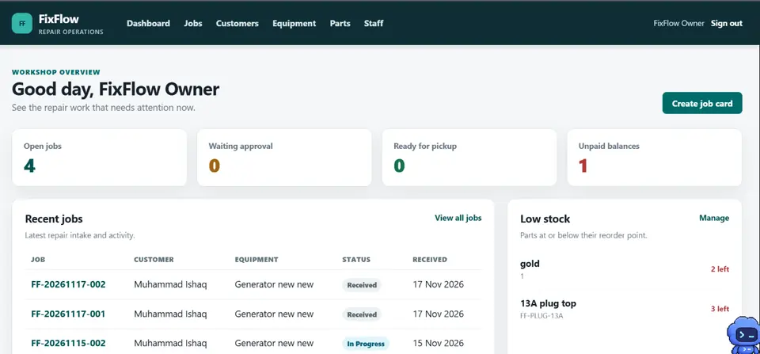

Customer & equipment records
Keep customer contact information linked to the generators, inverters, solar systems, and electronics brought in for repair.
01 / WORKSHOP OPERATIONS
A repair workshop management application that organizes the journey from customer intake and diagnosis to approval, repair work, inventory usage, payment, and collection.
THE PROBLEM / THE APPROACH
Repair workshops handle more than a repair ticket. They need to keep customer and equipment details together, record the reported fault, prepare an estimate, assign work, track parts, and know whether a job is ready for pickup or still has an outstanding balance.
I built FixFlow to bring those steps into one application. The workflow is organized around repair jobs, with role-based access for Owner/Admin, Front Desk, and Technician users. Important actions are checked in the application rather than being controlled only by what a page displays.
CORE FEATURES
Keep customer contact information linked to the generators, inverters, solar systems, and electronics brought in for repair.
Record the reported fault, intake condition, accessories, expected completion date, reference, and job history.
Prepare parts and labor estimates, record the customer's decision, and require approval before work proceeds.
Assign repair work, restrict technicians to their assigned jobs, and enforce valid job-status transitions.
Track parts and reorder points, record stock movements, and prevent job usage from creating negative stock.
Record partial or full payments, check outstanding balances, and provide print-friendly receipts.
APPLICATION VIEWS
These captures show the local application with sample workshop records. The interface includes separate views for owners, front-desk staff, and technicians.

TECHNICAL DETAILS
FixFlow uses ASP.NET Core Razor Pages for its page-based application structure, Entity Framework Core for data access, and MySQL for persistence. HTML, CSS, and JavaScript provide the interface without a separate front-end framework. Cookie authentication and role checks control access to staff features and repair jobs.